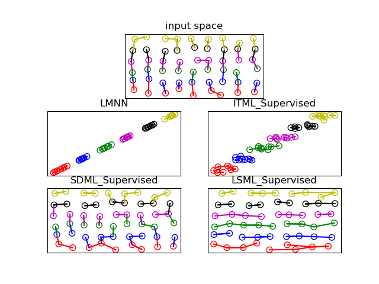

Note
Click here to download the full example code
Sandwich demo¶
Sandwich demo based on code from http://nbviewer.ipython.org/6576096
import numpy as np
from matplotlib import pyplot as plt
from sklearn.metrics import pairwise_distances
from sklearn.neighbors import NearestNeighbors
from metric_learn import (LMNN, ITML_Supervised, LSML_Supervised,
SDML_Supervised)
def sandwich_demo():
x, y = sandwich_data()
knn = nearest_neighbors(x, k=2)
ax = plt.subplot(3, 1, 1) # take the whole top row
plot_sandwich_data(x, y, ax)
plot_neighborhood_graph(x, knn, y, ax)
ax.set_title('input space')
ax.set_aspect('equal')
ax.set_xticks([])
ax.set_yticks([])
mls = [
LMNN(),
ITML_Supervised(num_constraints=200),
SDML_Supervised(num_constraints=200, balance_param=0.001),
LSML_Supervised(num_constraints=200),
]
for ax_num, ml in enumerate(mls, start=3):
ml.fit(x, y)
tx = ml.transform(x)
ml_knn = nearest_neighbors(tx, k=2)
ax = plt.subplot(3, 2, ax_num)
plot_sandwich_data(tx, y, axis=ax)
plot_neighborhood_graph(tx, ml_knn, y, axis=ax)
ax.set_title(ml.__class__.__name__)
ax.set_xticks([])
ax.set_yticks([])
plt.show()
# TODO: use this somewhere
def visualize_class_separation(X, labels):
_, (ax1, ax2) = plt.subplots(ncols=2)
label_order = np.argsort(labels)
ax1.imshow(pairwise_distances(X[label_order]), interpolation='nearest')
ax2.imshow(pairwise_distances(labels[label_order, None]),
interpolation='nearest')
def nearest_neighbors(X, k=5):
knn = NearestNeighbors(n_neighbors=k)
knn.fit(X)
return knn.kneighbors(X, return_distance=False)
def sandwich_data():
# number of distinct classes
num_classes = 6
# number of points per class
num_points = 9
# distance between layers, the points of each class are in a layer
dist = 0.7
data = np.zeros((num_classes, num_points, 2), dtype=float)
labels = np.zeros((num_classes, num_points), dtype=int)
x_centers = np.arange(num_points, dtype=float) - num_points / 2
y_centers = dist * (np.arange(num_classes, dtype=float) - num_classes / 2)
for i, yc in enumerate(y_centers):
for k, xc in enumerate(x_centers):
data[i, k, 0] = np.random.normal(xc, 0.1)
data[i, k, 1] = np.random.normal(yc, 0.1)
labels[i, :] = i
return data.reshape((-1, 2)), labels.ravel()
def plot_sandwich_data(x, y, axis=plt, colors='rbgmky'):
for idx, val in enumerate(np.unique(y)):
xi = x[y == val]
axis.scatter(*xi.T, s=50, facecolors='none', edgecolors=colors[idx])
def plot_neighborhood_graph(x, nn, y, axis=plt, colors='rbgmky'):
for i, a in enumerate(x):
b = x[nn[i, 1]]
axis.plot((a[0], b[0]), (a[1], b[1]), colors[y[i]])
if __name__ == '__main__':
sandwich_demo()
Total running time of the script: ( 0 minutes 4.099 seconds)